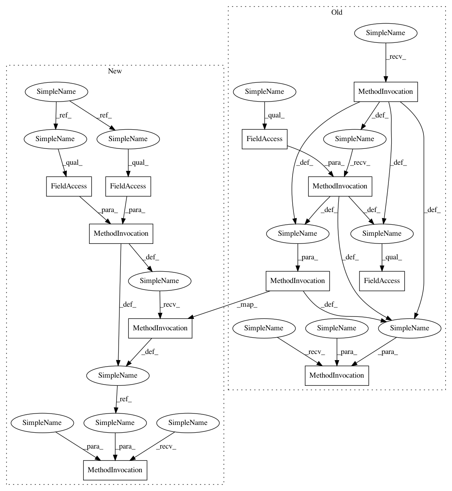

27f6a6d010343d17b9984dcba9cde649bd8d7b82,src/graph_transpiler/webdnn/graph/operators/acosh.py,Acosh,fold_constance,#Acosh#,26
Before Change
y = self.outputs["y"]
self.remove_all()
OptimizeRule.replace_variable(graph, y, ConstantVariable(np.arccosh(x0.copy().change_order(y.order).data), y.order))
After Change
def fold_constance(self, graph: Graph):
x0 = self.inputs["x0"] // type: ConstantVariable
y = self.outputs["y"]
self.remove_all()
y_new = ConstantVariable(x0.data, x0.order).change_order(y.order)
y_new.data = np.arccosh(y_new.data)
OptimizeRule.replace_variable(graph, y, y_new)
In pattern: SUPERPATTERN
Frequency: 1
Non-data size: 11
Instances
Project Name: mil-tokyo/webdnn
Commit Name: 27f6a6d010343d17b9984dcba9cde649bd8d7b82
Time: 2018-01-25
Author: y.kikura@gmail.com
File Name: src/graph_transpiler/webdnn/graph/operators/acosh.py
Class Name: Acosh
Method Name: fold_constance